Laravel adalah framework PHP berbasis pola arsitektur MVC (Model View Controller) yang dirancang untuk mempercepat dan menyederhanakan proses pengembangan aplikasi web.
Laravel menyediakan berbagai fitur bawaan seperti Eloquent ORM, Blade Template Engine, Artisan CLI, serta sistem routing yang ekspresif, sehingga developer dapat membangun aplikasi yang terstruktur, efisien, dan mudah dipelihara.
Pada praktikum ini, mahasiswa mempelajari alur lengkap pengembangan fitur dalam Laravel mulai dari perancangan struktur database hingga tampilan antarmuka pengguna.
Konsep yang dipelajari mencakup Migration untuk manajemen skema database, Seeding untuk pengisian data awal, Routing untuk pemetaan URL, Model untuk interaksi data, Controller sebagai logika aplikasi, serta View sebagai lapisan tampilan.
Sebelum memulai, file .env pada root project Laravel perlu dikonfigurasi agar aplikasi dapat terhubung ke database MySQL yang berjalan di XAMPP.
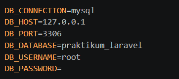
Konfigurasi ini memberitahu Laravel bahwa koneksi yang digunakan adalah MySQL, berjalan di localhost port 3306, dengan nama database praktikum_laravel.
Migration adalah fitur Laravel yang memungkinkan developer mendefinisikan struktur tabel database menggunakan kode PHP, bukan SQL langsung. Hal ini memberikan keuntungan berupa version control pada skema database, sehingga perubahan struktur dapat dilacak, dibagikan ke anggota tim, dan dikembalikan (rollback) bila diperlukan.
Untuk membuat file migration, gunakan perintah berikut di terminal:
php artisan make:migration create_products_table
Perintah ini menghasilkan file baru di folder database/migrations dengan nama berisi timestamp dan nama yang diberikan.
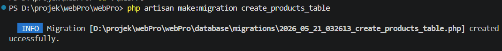
Setelah file migration dibuat, definisikan struktur tabel di dalam method up(). Untuk menjalankan migration agar tabel terbentuk di database secara otomatis, gunakan perintah:
php artisan migrate
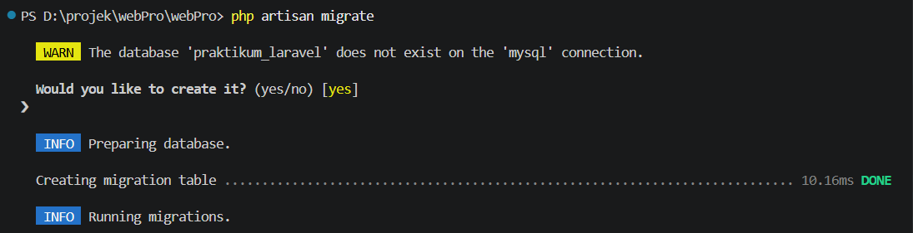
Apabila terjadi kesalahan pada definisi tabel, gunakan perintah rollback untuk membatalkan migration terakhir:
php artisan migrate:rollback
Sedangkan untuk menghapus semua tabel dan menjalankan ulang seluruh migration dari awal, gunakan:
php artisan migrate:fresh
Seeding adalah mekanisme untuk mengisi data awal ke dalam database secara otomatis menggunakan kode program. Seeder sangat berguna untuk menyiapkan data pengujian (dummy data) tanpa harus memasukkannya secara manual melalui antarmuka database.
Untuk membuat file seeder, jalankan perintah berikut:
php artisan make:seeder ProductSeeder
File seeder akan tersimpan di folder database/seeders. Setelah mengisi logika insert data di dalam method run(), daftarkan seeder tersebut di file DatabaseSeeder.php menggunakan:
$this->call(ProductSeeder::class);
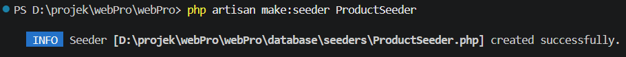
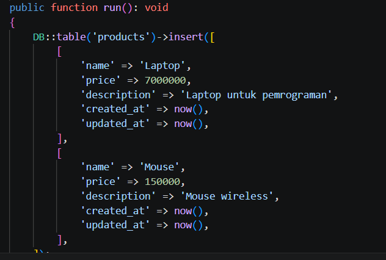
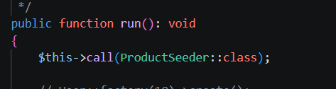
Untuk menjalankan seeder, gunakan perintah:
php artisan db:seed
Apabila ingin menjalankan migration dan seeding secara bersamaan sekaligus mereset seluruh tabel, gunakan:
php artisan migrate:fresh --seed
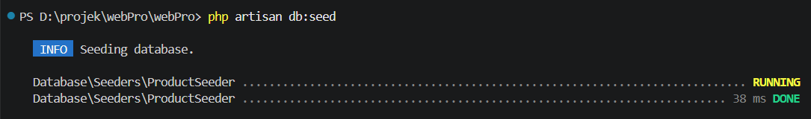
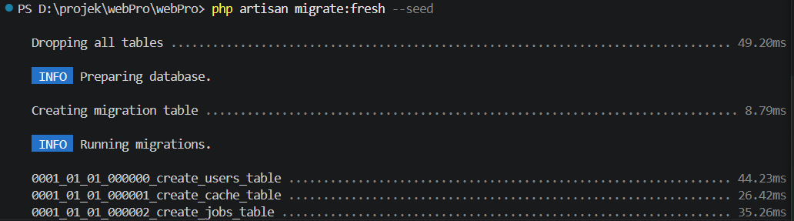
Routing digunakan untuk menentukan URL dan respons yang diberikan aplikasi ketika pengguna mengakses suatu alamat. Semua routing web berada pada file routes/web.php.
Routing Dasar digunakan untuk URL statis yang mengembalikan respons langsung:
Route::get('/', function () { return 'Selamat Datang di Laravel'; });
Routing Parameter digunakan ketika URL membutuhkan segmen dinamis, misalnya ID produk. Diakses melalui http://127.0.0.1:8000/produk/1:
Route::get('/produk/{id}', function ($id) { return 'Produk ID: ' . $id; });
Named Route memberikan nama pada route sehingga mudah direferensikan di tempat lain dalam aplikasi:
Route::get('/dashboard', function () { return 'Halaman Dashboard'; })->name('dashboard');
Resource Route secara otomatis mendaftarkan tujuh route CRUD sekaligus untuk satu controller:
Route::resource('products', ProductController::class);
Untuk melihat daftar seluruh route yang terdaftar dalam aplikasi, gunakan perintah:
php artisan route:list
Route nanti akan dihubungkan dengan controller untuk menangani request yang masuk sesuai Screenshot:
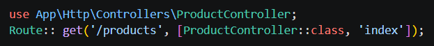
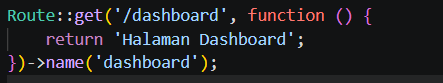
Model adalah representasi data dalam aplikasi. Laravel menggunakan Eloquent ORM yang memungkinkan developer berinteraksi dengan tabel database menggunakan sintaks PHP berorientasi objek tanpa perlu menulis query SQL secara langsung. Untuk membuat model baru, gunakan perintah:
php artisan make:model Product
Properti $fillable pada model berfungsi sebagai whitelist kolom yang diizinkan untuk diisi secara massal (mass assignment), melindungi aplikasi dari serangan mass assignment vulnerability. Operasi CRUD dengan Eloquent dilakukan sebagai berikut:
Product::create([...]); (menambah data) Product::all(); (mengambil semua data) Product::find($id)->update([...]); (mengubah data) Product::find($id)->delete(); (menghapus data)
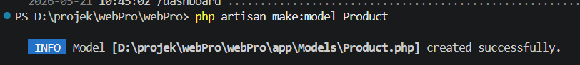
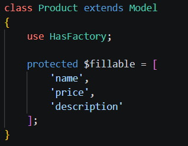
View adalah lapisan presentasi yang menampilkan antarmuka kepada pengguna. Laravel menggunakan Blade sebagai template engine dengan sintaks yang bersih dan ringkas. File view disimpan di folder resources/views dengan ekstensi .blade.php. Untuk membuat view baru, gunakan perintah:
php artisan make:view nama-view
Blade menyediakan directive khusus untuk mempermudah penulisan logika di dalam tampilan. @foreach digunakan untuk iterasi data, @extends untuk menggunakan layout utama, @section untuk mendefinisikan blok konten, @yield untuk menampilkan konten dari section, dan @include untuk menyertakan file view lain. Fitur Blade Layout memungkinkan pembuatan template induk yang dapat digunakan ulang oleh banyak halaman, sehingga bagian seperti header, navbar, dan footer cukup ditulis satu kali.
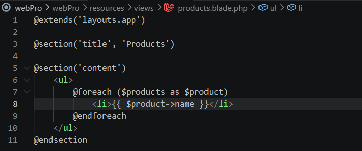
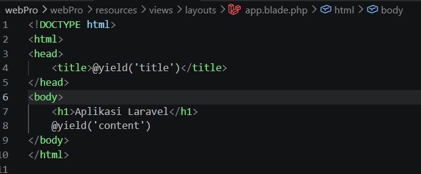
Controller bertugas mengelola logika aplikasi dan menjadi jembatan antara Model dan View. Ketika pengguna mengakses suatu URL, route akan meneruskan request tersebut ke method yang sesuai di dalam Controller. Untuk membuat controller baru, gunakan perintah:
php artisan make:controller ProductController
Untuk membuat resource controller yang otomatis berisi tujuh method CRUD sekaligus, tambahkan flag --resource:
php artisan make:controller ProductController --resource
File controller tersimpan di app/Http/Controllers. Tujuh method pada resource controller mencakup index untuk menampilkan daftar data, create untuk form tambah, store untuk menyimpan data baru, show untuk detail data, edit untuk form edit, update untuk menyimpan perubahan, dan destroy untuk menghapus data.
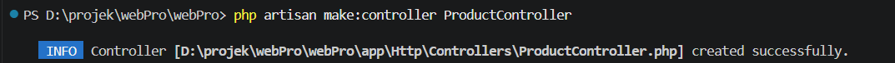
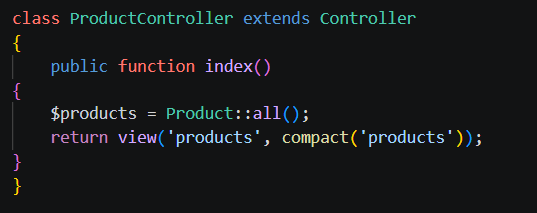
Berdasarkan praktikum yang telah dilakukan, dapat disimpulkan bahwa Laravel merupakan framework PHP yang sangat membantu dalam proses pengembangan aplikasi web karena menggunakan konsep MVC (Model–View–Controller) yang membuat struktur program menjadi lebih terorganisir. Laravel juga menyediakan berbagai fitur bawaan seperti routing, middleware, Blade Template Engine, dan Eloquent ORM yang mempermudah pengelolaan database serta pengembangan antarmuka aplikasi. Selain itu, proses instalasi Laravel membutuhkan beberapa tools pendukung seperti XAMPP, Composer, Git, Node.js, dan NPM agar lingkungan development dapat berjalan dengan baik. Setelah melakukan instalasi dan konfigurasi, project Laravel dapat dibuat dan dijalankan menggunakan perintah Artisan. Dengan praktikum ini, mahasiswa dapat memahami dasar penggunaan Laravel serta mengetahui tahapan awal dalam membangun aplikasi web menggunakan framework Laravel.